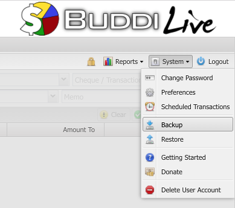
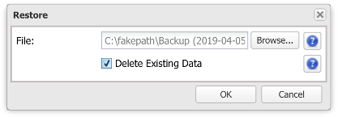

Buddi Live allows you to export your entire data set as a backup. This can be useful in case of server troubles, if you forget your password (and have turned encryption on), or in the event that you accidentally delete something that you did not want to delete. To backup your data, use the 'Backup' option from the System menu:

The system will download a file named 'Backup.json', with today's date. This file is not encrypted - be sure to treat it as you would any other sensitive data!
To restore a previous backup, select the 'Restore' option from the system menu. You will be prompted for the file to restore, and can optionally select the 'Delete Existing Data' check box:

(In general, when restoring a full backup it is a good idea to check the 'Delete Existing Data' option. If you do not do this, then any existing transactions may not be properly updated.)
A dialog box will indicate when the backup is complete. Click OK and the web page will refresh, showing the restored data.